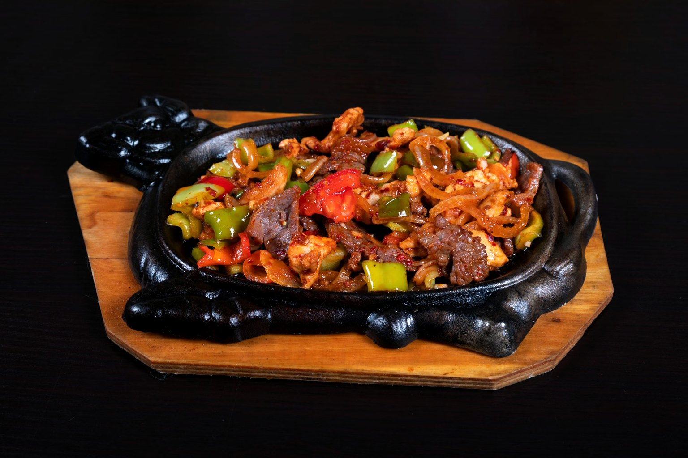
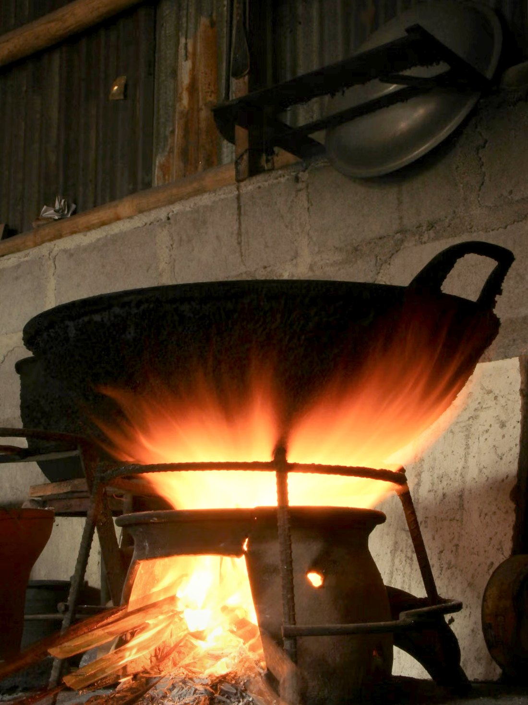
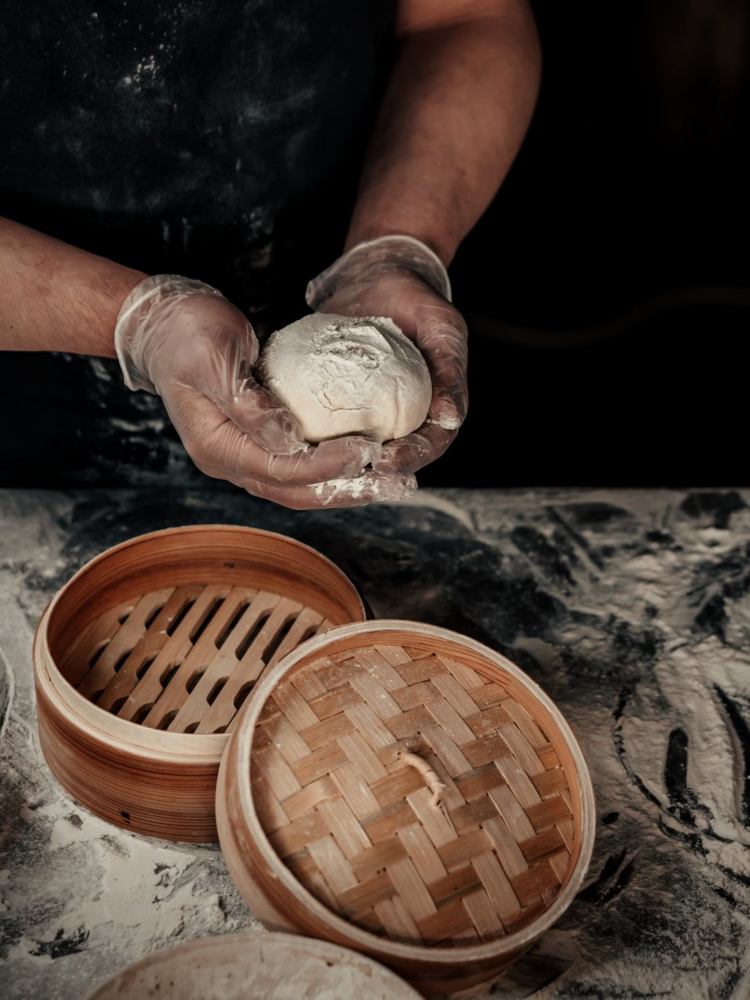
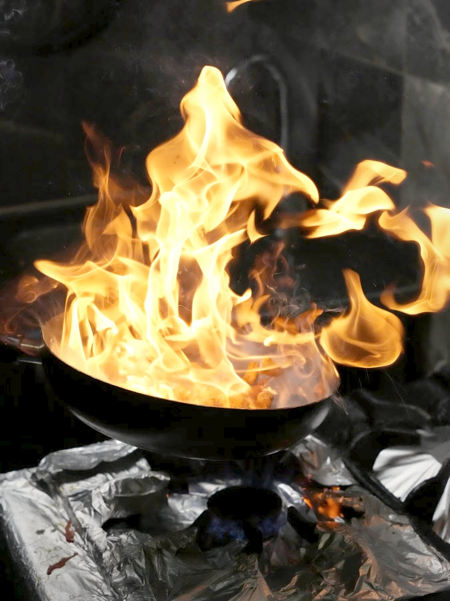
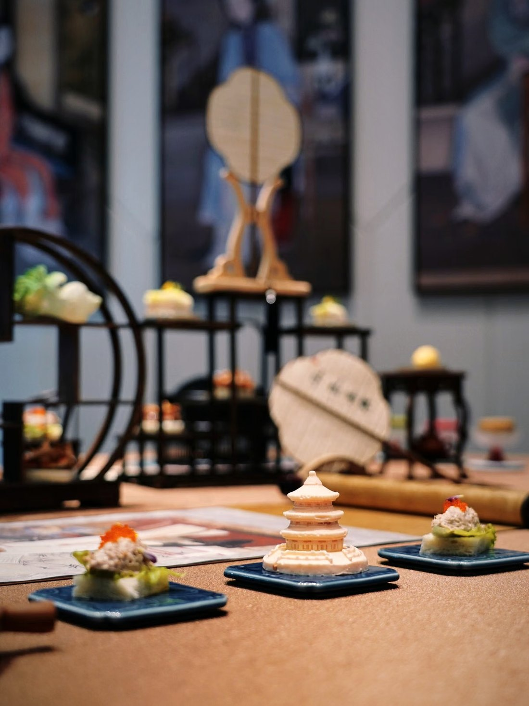
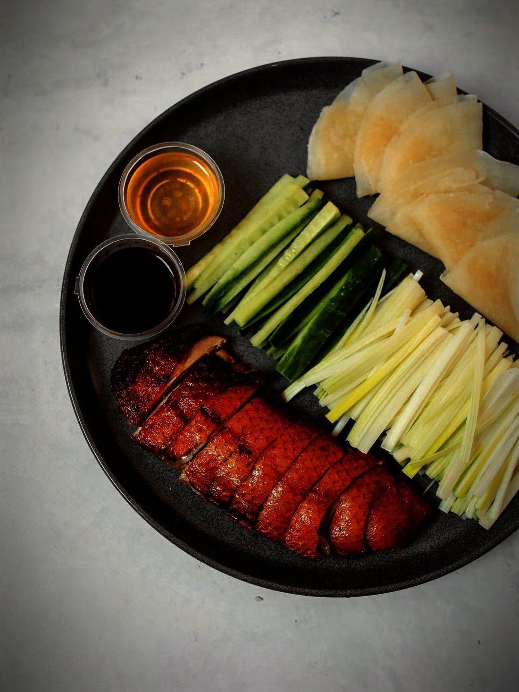

Li’s began on the coast, which is why the seafood is the part the
kitchen is proudest of. Meat, fish and vegetables are sourced across
Kenya; what happens after that is technique — a wok hot enough to
change a dish in seconds, and a steamer that will not be hurried. The
welcome is the third thing, and this house has never treated it as the
smallest.

Restaurants
2
Dishes on the carte
150+
Ways with seafood
30
Nights a week
6
The Li’s practice
The Way a Meal Is Built
I
II
III
IV


Chapter I — The wok
Hot Enough to Change It
A wok burner runs far hotter than any domestic hob, and that is the whole technique. Food goes in dry, moves constantly, and comes out before it has time to stew. What people taste and call wok hei is not a seasoning — it is what that heat does to an ingredient in the few seconds it is given.
One pan at a time
Each dish is cooked in its own wok, to order. Nothing is held back; a stir-fry that waits is a different dish by the time it reaches the table.
Seconds, not minutes
The cooking is the fast part. Everything slow — the stock, the cut, the marinade — happened long before the doors opened.
Chapter II — The hand
Folded, Not Machined
Dim sum is the part of a kitchen no machine has ever improved. A wrapper is rolled until the filling shows through it, then pleated shut by hand, one at a time, in numbers nobody sensible would count. It is the least glamorous work in the building and the first thing a good kitchen gets judged on.
By the piece
A basket is assembled item by item. There is no batch that makes the next one easier, and no way to catch up later.
Steam is unforgiving
A thick wrapper is obvious and a thin one badly folded is worse. Both declare themselves the moment the lid comes off.
Chapter III — The coast
It Starts Before the Kitchen
Li’s opened in Mombasa, and a coastal kitchen learns early that seafood is decided where it is bought rather than where it is cooked. Prawns, crab, squid and whole fish are the part of this menu with the most ways to go wrong and the fewest places to hide.
Sourced across Kenya
Meat, seafood and produce come from around the country rather than off one standing order.
Cooked plainly on purpose
A whole fish steamed with light soya has nothing on it at all. That is the point of the dish, and it is also the test of it.
Chapter IV — The table
Everything to the Middle
A Chinese table is not a set of separate dinners that happen to be next to each other. Dishes arrive as they are ready, go to the centre, and belong to everyone — which is why ordering is a conversation, why the table is round, and why two people will always order worse than six.
Ordered together
A good spread is roughly one dish per person and one more for the table. The balance between them matters more than any single choice on it.
Paced by the kitchen
Courses come as the woks come free rather than in a fixed order. The meal has a shape rather than a schedule.
Our experience
Thoughtfully Cooked. Generously Served.
Nothing here is left to chance. The wok is brought to heat,
the wrappers folded by hand, the fish chosen at the market, the table laid so the
dishes can reach the middle of it. Most of the meal was decided long before anyone
sat down.

01
Wok & Fire
A burner hotter than anything a home kitchen can reach,
and a pan that never stops moving. It is the loudest part of the building and
the reason a stir-fry tastes of more than what went into it.
02
Dim Sum by Hand
Rolled thin, filled, and pleated shut one piece at a
time. The technique is generations old, no part of it has been improved by a
machine, and the steamer shows every shortcut.

03
The Li’s Table
Dishes to the centre, a table that turns, and nobody
eating alone. A meal here is measured in what gets shared rather than in
courses, and you order more than you meant to.
Tuányúan
The Table Comes Together.
Tuányúan is the word for a family coming back
together — the reunion dinner, and by extension any table with everybody
at it. It is why a Chinese table is round, why the dishes go to the middle
instead of in front of one person, and why nobody here is brought a separate
dinner of their own. Very little on this menu was designed to be eaten alone.

One table, everyone at it.
Reserve
Reserve your table
A round table, a duck that wants ordering ahead, and
a kitchen that would rather know you are coming. Tell us when, and how many
— the rest is arranged from there.